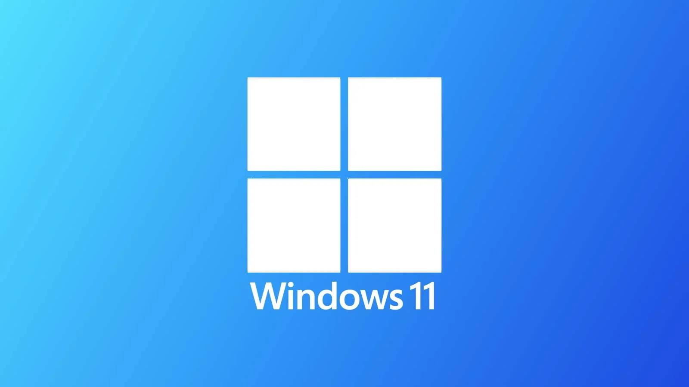
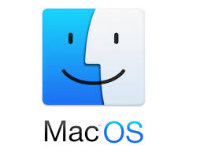
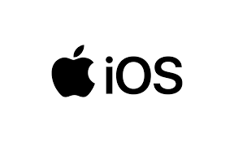

Windows este cel mai folosit sistem de operare pentru calculator, cea mai nouă versiune fiind Windows 11.

.

Sistem multitasking-multiutilizator, produs de Apple, bazat pe Unix.


Este folosit în servere, începând cu şcoli, firme mici şi mijlocii până la laboratoare de cercetare şi bănci ce prioritizează disponibilitatea şi performanţa.


Sistem de operare folosit în mare parte pentru dispozitive mobile, bazat pe Linux, personalizabil.

Sistem de operare de tip closed-source. Are o interfață bazată pe text, însă toate variantele sunt dotate şi cu sistem grafic. Nucleul sisitemelor UNIX este în general scris în limbajul de programare C.

Sistem de operare mobil bazat pe Unix, disponibil pe dispozitive Apple, securitate avansată.
